Generalized Learning Vector Quantization¶
Learning Vector quantization (LVQ) [1] attempts to construct a highly sparse model of the data by representing data classes by prototypes. Prototypes are vectors in the data spaced which are placed such that they achieve a good nearest-neighbor classification accuracy. More formally, for a dataset 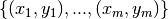 LVQ attempts to place K prototypes 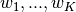 with 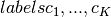 in the data space, such that as many data points as possible are correctly classified by assigning the label of the closest prototype. The number of prototypes K is a hyper-parameter to be specified by the user. Per default, we use 1 prototype per class.
Placing the prototypes is done by optimizing the following cost function, called the Generalized Learning Vector Quantization (GLVQ) cost function [2]:
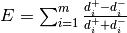
where 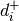 is the squared Euclidean distance of  to the closest
prototype
to the closest
prototype  with the same label 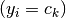 and 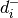 is the squared
Euclidean distance of to the closest prototype w_k with a different
label 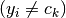. Note that an LVQ model will classify a data point
correctly if and only if 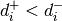, which makes the cost function a
coarse approximation of the classification error. The optimization is
performed via a limited-memory version of the
Broyden-Fletcher-Goldfarb-Shanno algorithm. Regarding runtime, the cost
function can be computed in linear time with respect to the data points:
For each data point, we need to compute the distances to all prototypes,
compute the fraction 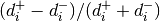 and then sum up all
these fractions, the same goes for the derivative. Thus, GLVQ scales
linearly with the number of data points.
with the same label 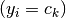 and 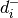 is the squared
Euclidean distance of to the closest prototype w_k with a different
label 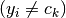. Note that an LVQ model will classify a data point
correctly if and only if 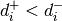, which makes the cost function a
coarse approximation of the classification error. The optimization is
performed via a limited-memory version of the
Broyden-Fletcher-Goldfarb-Shanno algorithm. Regarding runtime, the cost
function can be computed in linear time with respect to the data points:
For each data point, we need to compute the distances to all prototypes,
compute the fraction 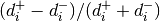 and then sum up all
these fractions, the same goes for the derivative. Thus, GLVQ scales
linearly with the number of data points.
References:
| [1] | “Learning Vector Quantization” Kohonen, Teuvo - Self-Organizing Maps, pp. 175-189, 1995. |
| [2] | “Generalized learning vector quantization.” Sato, Atsushi, and Keiji Yamada - Advances in neural information processing systems 8, pp. 423-429, 1996. |
Generalized Learning Vector Quantizaton (GLVQ)¶
A GLVQ model can be constructed by initializing GlvqModel with the
desired hyper-parameters, e.g. the number of prototypes, and the initial
positions of the prototypes and then calling the GlvqModel.fit function with the
input data. The resulting model will contain the learned prototype
positions and prototype labels which can be retrieved as properties w_
and c_w_. Classifications of new data can be made via the predict
function, which computes the Euclidean distances of the input data to
all prototypes and returns the label of the respective closest prototypes.
Generalized Relevance Learning Vector Quantization (GRLVQ)¶
In most classification tasks, some features are more discriminative than others. Generalized Relevance Learning Vector Quantization (GRLVQ) accounts for that by weighting each feature j with a relevance weight 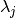, such that all relevances are 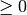 and sum up to 1. The relevances are optimized using LBFGS on the same cost function mentioned above, just with respect to the relevance terms. Beyond enhanced classification accuracy, the relevance weights obtained by GRLVQ can also be used to obtain a dimensionality reduction by throwing out features with low (or zero) relevance. After initializing a GrlvqModel and calling the fit function with your data set, you can retrieve the learned relevances via the attribute lambda_.
The following figure shows how GRLVQ classifies some example data after training. The blue dots show represent the prototype. The yellow and purple dots are the data points. The bigger transparent circle represent the target value and the smaller circle the predicted target value. The right side plot shows the data and prototypes multiplied with the feature relevances. As can be seen, GRLVQ correctly dismisses the second dimension, which is non-discriminative, and emphasizes the first dimension, which is sufficient for class discrimination.
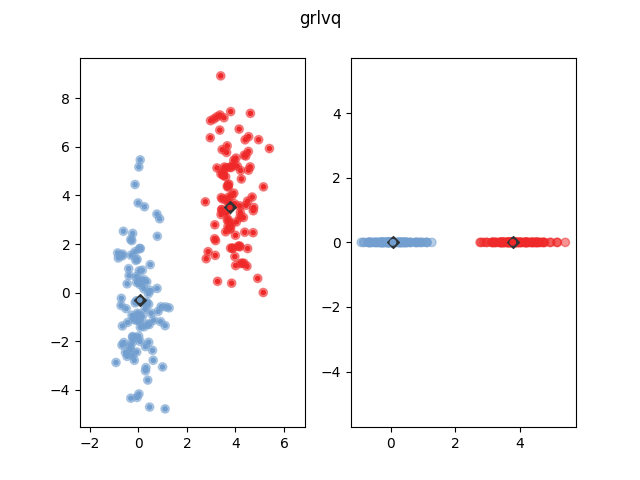References:
- “Generalized relevance learning vector quantization” B. Hammer and T. Villmann - Neural Networks, 15, 1059-1068, 2002.
Generalized Matrix Learning Vector Quantization (GMLVQ)¶
Generalized Matrix Learning Vector Quantization (GMLVQ) generalizes over
GRLVQ by not only weighting features but learning a full linear
transformation matrix  to support classification. Equivalently,
this matrix can be seen as a distortion of the Euclidean distance
in order to make data points from the same class look more similar and
data points from different classes look more dissimilar, via the
following equation:
to support classification. Equivalently,
this matrix can be seen as a distortion of the Euclidean distance
in order to make data points from the same class look more similar and
data points from different classes look more dissimilar, via the
following equation:
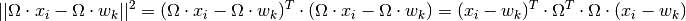
The matrix product 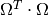 is also called the positive
semi-definite relevance matrix  . Interpreted this way, GMLVQ is
a metric learning algorithm [3]. It is also possible to initialize the
GmlvqModel by setting the dim parameter to an integer less than the data
dimensionality, in which case Omega will have only dim rows, performing
an implicit dimensionality reduction. This variant is called Limited
Rank Matrix LVQ or LiRaM-LVQ [4]. After initializing the GmlvqModel and
calling the fit function on your data set, the learned matrix can
be retrieved via the attribute omega_.
. Interpreted this way, GMLVQ is
a metric learning algorithm [3]. It is also possible to initialize the
GmlvqModel by setting the dim parameter to an integer less than the data
dimensionality, in which case Omega will have only dim rows, performing
an implicit dimensionality reduction. This variant is called Limited
Rank Matrix LVQ or LiRaM-LVQ [4]. After initializing the GmlvqModel and
calling the fit function on your data set, the learned matrix can
be retrieved via the attribute omega_.
The following figure shows how GMLVQ classifies some example data after
training. The blue dots show represent the prototype. The yellow and
purple dots are the data points. The bigger transparent circle represent
the target value and the smaller circle the predicted target value. The
right side plot shows the data and prototypes multiplied with the
learned matrix. As can be seen, GMLVQ effectively projects the
data onto a one-dimensinal line such that both classes are well
distinguished. Note that this projection would not have been possible
for GRLVQ because the relevant data direction is not parallel to a
coordinate axis.
References:
| [3] | “Adaptive Relevance Matrices in Learning Vector Quantization” Petra Schneider, Michael Biehl and Barbara Hammer - Neural Computation, vol. 21, nb. 12, pp. 3532-3561, 2009. |
| [4] | “Limited Rank Matrix Learning - Discriminative Dimension Reduction and Visualization” K. Bunte, P. Schneider, B. Hammer, F.-M. Schleif, T. Villmann and M. Biehl - Neural Networks, vol. 26, nb. 4, pp. 159-173, 2012. |
Localized Generalized Matrix Learning Vector Quantization (LGMLVQ)¶
LgmlvqModel extends GLVQ by giving each prototype/class relevances for each feature. This way LGMLVQ is able to project the data for better
classification.
Especially in multi-class data sets, the ideal projection may be
different for each class, or even each prototype. Localized Generalized
Matrix Learning Vector Quantization (LGMLVQ) accounts for this locality
dependence by learning an individual 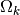 for each prototype k [5].
As with GMLVQ, the rank of can be bounded by using the dim
parameter. After initializing the LgmlvqModel and calling the fit
function on your data set, the learned matrices can be
retrieved via the attribute omegas_.
The following figure shows how LGMLVQ classifies some example data after
training. The blue dots show represent the prototype. The yellow and
purple dots are the data points. The bigger transparent circle represent
the target value and the smaller circle the predicted target value. The
plot in the middle and on the right show the data and prototypes after
multiplication with the 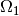 and 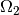 matrix respectively. As
can be seen, both prototypes project the data onto one dimension, but
they choose orthogonal projection dimensions, such that the data of the
respective own class is close while the other class gets dispersed,
thereby enhancing classification accuracy. A GmlvqModel can not solve
this classification problem, because no global can enhance the
classification significantly.
References:
| [5] | “Adaptive Relevance Matrices in Learning Vector Quantization” Petra Schneider, Michael Biehl and Barbara Hammer - Neural Computation, vol. 21, nb. 12, pp. 3532-3561, 2009. |
Dimensionality Reducation¶
The relevances learned by a GrlvqModel and the relevance matrices
learned by a GmlvqModel or a LgmlvqModel can be applied for
dimensionality reduction by projecting the data on the eigenvectors of
the relevance matrix which correspond to the largest eigenvalues.
Implementation Details¶
This implementation is based upon the reference Matlab implementation provided by Biehl, Schneider and Bunte [6].
To optimize the GLVQ cost function with respect to all parameters
(prototype positions as well as relevances and matrices) we
employ the LBFGS implementation of scipy. To prevent the degeneration of relevances in GMLVQ, we add
the log-determinant of the relevance matrix 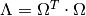
to the cost function, such that relevances can not degenerate to
zero [7].
References:
| [6] | LVQ Toolbox M. Biehl, P. Schneider and K. Bunte, 2017 |
| [7] | “Regularization in Matrix Relevance Learning” P. Schneider, K. Bunte, B. Hammer and M. Biehl - IEEE Transactions on Neural Networks, vol. 21, nb. 5, pp. 831-840, 2010. |